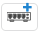
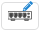
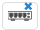

Adding Switches¶
To add a switch to a site click on the  icon in the Site Page. To add switches to multiple network sites simultaneously select the sites in the Network Sites table and select Add/Edit Tower Switch from the menu options.
The Tower Switch page is displayed.
New Tower Switch Page¶
Equipment Selection¶
Select the equipment configuration. The fields that are displayed will change depending on the equipment selected. For example when an AC power supply is selected, the Power Cord field is displayed.
Redundant Power: Select the redundant power option. Redundant power supplies are only available on the 16 Port switch
Switch Type: Select the switch family, TX1000 series or TX2000 series
RJ45 Ports: Select the number of RJ45 ports required
Fiber Ports: Select the number of Fiber ports required
Country: For use in United States, select United States, for anywhere else select Other
Power: Select the power supply, either AC or DC and size depending on equipment to be connected
Power Cord: For an AC power supply, select the Power Cord
External Sync: Select the External Sync source
cnPulse: (TX2000 only) Select the cnPulse port, if required
Transceivers: Select the type and enter the number of transceivers. The number of transceivers is dependent on the number of Fiber ports selected, therefore the sum of all transceivers must not exceed the total fiber ports configured. SFP+ ports can be either 1 Gbps or 10 Gbps, SFP ports can only be 1 Gbps.
Completed Tower Switch Page¶
Bill of Materials¶
LINKPlanner automatically calculates the Bill of Materials (BOM) for the required components of the switch. The switch BOM contains the list of part numbers, descriptions and associated quantities for the switch. Optional items can be added to the list. The link BOM can be saved as a CSV or Excel file by clicking  in the menu options.
in the menu options.
P/N: The Cambium part number. If the component is not supplied by Cambium, this is set to ‘(no part number)’.
Description: Description of the components.
Qty: Quantity required.
Notes: By default this displays information about certain items, such as whether they are obsolete.
To add additional items to the BOM, click . A list of optional extras for the link will be displayed. To filter the list of optional extras, enter a part number or description in the Filter field. To add items to the BOM tick the box next to each item required and click OK. The item will appear in the main list, where the quantity can be adjusted by selecting the number in the Qty column and adjusting as required. To delete optional items from the BOM list, tick the box next to each item and click . A star denotes optional extras which have been added to the automatic BOM items.
Editing and Deleting Switches¶
When a switch is already added to a site the menu icons change. To edit or view the switch configuration click on the  icon or to delete the switch from the network site click on the  icon. Switches can also be deleted from multiple sites by selecting all the sites required in the network sites table and clicking on Delete Tower Switch